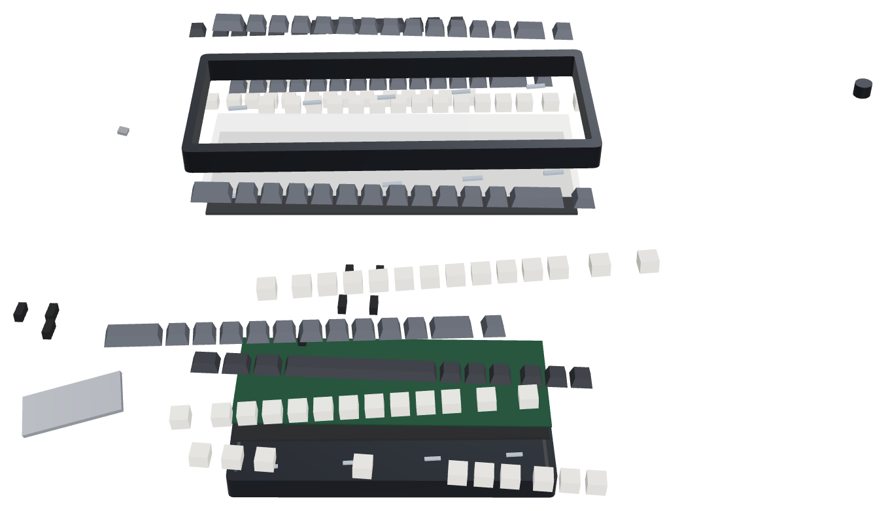
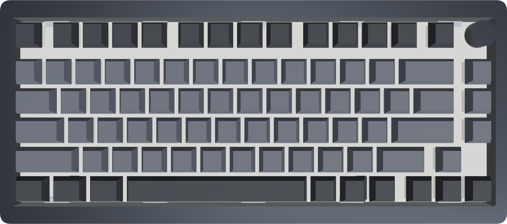

Keychron Q1 Pro
A 75% wireless mechanical keyboard in a machined aluminium body, 327.5 mm wide and 145 mm deep.
Barebone $129.49 at keychron.com on 26 Nov 2026, usually $184.99.
- BodyFull CNC machined aluminium.
- PlatePolycarbonate, on a double-gasket mount.
- Battery4000 mAh.

24 parts
Counted from the 3D model when the page loads. Keycaps and switches are grouped by row.
1,736 g
Back in one piece. That is Keychron's figure for the fully assembled board, give or take 10 g.
How it types
The switches sit in a polycarbonate plate, and the plate hangs on gaskets instead of being screwed to the case. Keychron adds a second set of silicone pads between the top and bottom halves of the case, which it calls a double-gasket design.
Every switch pulls out by hand. The sockets take most 3-pin and 5-pin MX switches, so you can change how the board feels without a soldering iron.
The stabilisers under the long keys are screwed into the circuit board.
Wireless or wired
Bluetooth 5.1 pairs with up to three devices. A USB-C cable does the rest.
Wired, the board reports 1000 times a second. Over Bluetooth it reports 90 times a second, so plug in for fast games.
Keychron's lab figures for the 4000 mAh battery are up to 300 hours with the backlight off and up to 100 hours with the RGB at its lowest brightness.
It works with macOS, Windows and Linux, and a switch on the board keeps separate Mac and Windows layouts.
Remap any key
The board runs QMK firmware. Keys, macros and the knob are set in Keychron's Launcher web app, which needs a cable and a recent Chrome, Edge or Opera.
The RGB LEDs face south and come with 22 backlight types.
Size and spec

- Layout
- 75%, ANSI, with knob
- Body
- Full CNC machined aluminium
- Plate
- Polycarbonate
- Mount
- Double gasket
- Switches
- Keychron K Pro Red, Brown or Banana, hot-swappable
- Stabilisers
- Screw-in, PCB mounted
- Keycaps
- KSA profile, double-shot PBT
- Backlight
- South-facing RGB, 22 types
- Connection
- Bluetooth 5.1 to three devices, or USB-C
- Polling rate
- 1000 Hz wired, 90 Hz wireless
- Battery
- 4000 mAh
- Height
- 22.6 mm front, 35.8 mm back, without keycaps
- Typing angle
- 5.2°
- Weight
- 1,736 g ± 10 g fully assembled
- Works with
- macOS, Windows, Linux
Two ways to buy it
- Barebone
- Case, plate and circuit board with no switches or keycaps, for people who have their own. $129.49 on 26 Nov 2026, usually $184.99.
- Fully assembled
- Switches fitted, with keycaps for both Mac and Windows. Check keychron.com for today's price.
- Colours
- Carbon Black, Silver Grey, Shell White
Questions
Does it work with a Mac?
Yes. It works with macOS, Windows and Linux, and the fully assembled version comes with keycaps for Mac and Windows.
Can I change the switches?
Yes. It is hot-swappable and takes most 3-pin and 5-pin MX switches.
Is Bluetooth fast enough for games?
Bluetooth runs at 90 Hz. Use the USB-C cable for 1000 Hz.
What do I need to remap keys?
A USB-C cable and a recent Chrome, Edge or Opera, to open Keychron's Launcher.
Buy the Q1 Pro
This is a demo page built by Tempany Web Studios to show a product taken apart on scroll. We do not sell or ship keyboards and have no connection to Keychron. The button goes to Keychron's own shop.
Want your product shown this way? Email logan@tempanywebstudios.co.uk.